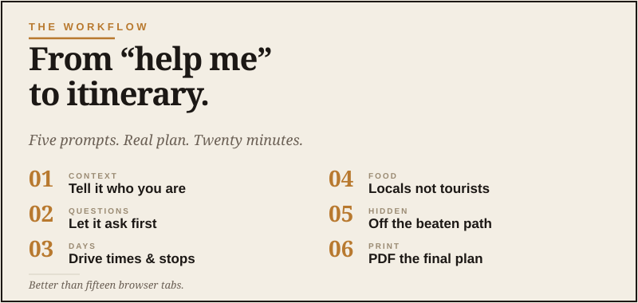

The Workflow
Plan the trip in an hour, not a week.

Here’s a confession. The first time I tried to use ChatGPT to plan a trip, I got back exactly what most people get back: a generic, slightly enthusiastic itinerary that read like the back of a brochure. Day one, visit the famous landmark. Day two, enjoy local cuisine. Day three, take a relaxing stroll.
Useless. I closed the tab and went back to opening fifteen browser tabs like an animal. Which, to be fair, is how a lot of my trip planning has looked over the years.
The thing I didn’t understand yet is that AI gives you generic answers when you ask generic questions. The trick to using AI for trip planning is to treat it like a knowledgeable friend who needs to understand your trip — not a search engine with personality. I don’t need another listicle. I need to know where the good road is, where the bad idea starts, and whether there’s decent coffee before I commit to a detour.
Done right, AI is genuinely better than any travel website I’ve used. It can think about your interests, your timeline, your driving tolerance, your budget, your travel companion’s preferences, and the weather, all in one conversation. It can write you an actual itinerary, not a Pinterest board.
Here’s how to do it.
Step one: don’t start with the itinerary
The biggest mistake is asking for the trip first. “Plan me a 7-day trip to Colorado.” You’ll get a generic answer because you asked a generic question.
Start by giving the AI context about you. Specifically, three things:
- Who’s on the trip. Solo? Spouse? Kids? Friends? What do they enjoy? What do they hate?
- What kind of trip you want. Relaxing? Adventurous? Photography-focused? Food-focused? Off the beaten path? Major sights?
- Your constraints. Time, budget, drive tolerance, physical ability, dietary stuff, anything that shapes the trip.
Five minutes giving the AI this context will make every answer afterwards ten times better.
The opening prompt that works
That last sentence is the magic. By asking the AI to ask you questions first, you force it into a real conversation instead of dumping a generic plan.
The questions you’ll get back are useful. “What time of year are you traveling? Are there any specific places you’ve already heard about and want to include? How do you feel about getting up early for sunrise photo opportunities?”
Answer them. Then ask for the plan.
What you’ll get vs. what to push for
The first draft will be decent. Probably good enough that some people would stop there.
Don’t stop. The second pass is where AI trip planning gets genuinely impressive.
Try these follow-ups:
Now you’ve got a real itinerary, not a list of destinations.
Now you’ve solved “where do we eat tonight” for the whole trip.
Now you’re getting the off-the-beaten-path stuff that makes a trip memorable. That’s usually where the real story is anyway — not the obvious stop, but the thing you only find because you left a little room in the plan.
Now you’ve got practical prep covered.
The mistakes that ruin AI trip planning
Asking for too long a trip in one shot. Plan two or three days at a time, in detail. AI gets vague when you ask it to plan a two-week trip end-to-end. Break it up.
Trusting it on operational details. AI can be confidently wrong about whether a specific restaurant is open on Mondays, what time a museum closes, or whether a road is currently open. Use AI for the shape of the trip — what to do, where to go, when to leave — and then verify the operational details (hours, reservations, road closures) with the actual sources.
Not telling it about real people. If your wife hates crowded restaurants and your back is bad and your son is vegetarian, the AI needs to know. It can’t guess. The more specific you are, the better the plan.
Treating the first answer as final. Iterate. “Make day three less ambitious.” “Add an option for a rainy day.” “What if we drive the back way to the next town?” Each follow-up sharpens the plan.
The thing that makes this genuinely better than search
Search treats every query as independent. You ask one question, you get one answer, and then you start over with the next question.
AI remembers the trip. By the time you’ve been back and forth for ten minutes, it knows your party, your dates, your interests, and your itinerary. So when you ask “what should we pack?” — it knows. When you ask “what are some indoor options if it rains?” — it knows. When you ask “can you make me a packing list?” — it knows.
That continuous context is what separates AI trip planning from search-and-tab-juggling. Use it.
The end-of-trip move worth doing
One last prompt, before you start the trip:
Now you have a real document. Print it. Save it to your phone. Hand the copy to your spouse so she has it too.
That’s the whole workflow. Twenty minutes of conversation, a real plan you’d actually want to follow, and zero browser tabs left open.